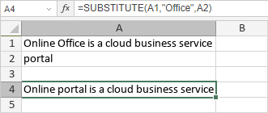

SUBSTITUTE Funkcija
SUBSTITUTE funkcija je jedna od funkcija za tekst i podatke. Koristi se za zamenu skupa karaktera novim karakterom.
Sintaksa
SUBSTITUTE(text, old_text, new_text, [instance_num])
SUBSTITUTE funkcija ima sledeće argumente:
| Argument | Opis |
|---|---|
| text | Niz karaktera u kojem će se izvršiti zamena. |
| old_text | Niz karaktera koji će biti zamenjen. |
| new_text | Niz karaktera kojim će se izvršiti zamena. |
| instance_num | Broj pojavljivanja koji će biti zamenjen. Ovo je opcioni argument; ako se izostavi, funkcija će zameniti sva pojavljivanja unutar text. |
Napomene
Kako primeniti SUBSTITUTE funkciju.
Primeri
Slika ispod prikazuje rezultat koji vraća SUBSTITUTE funkcija.
